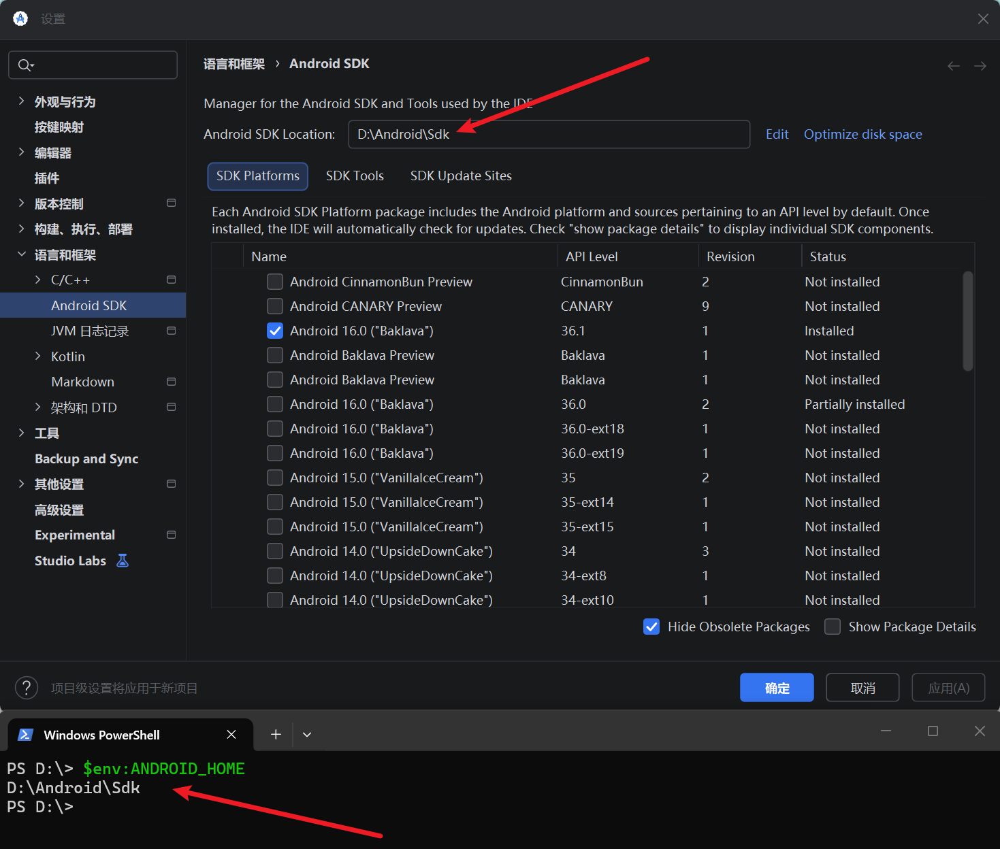
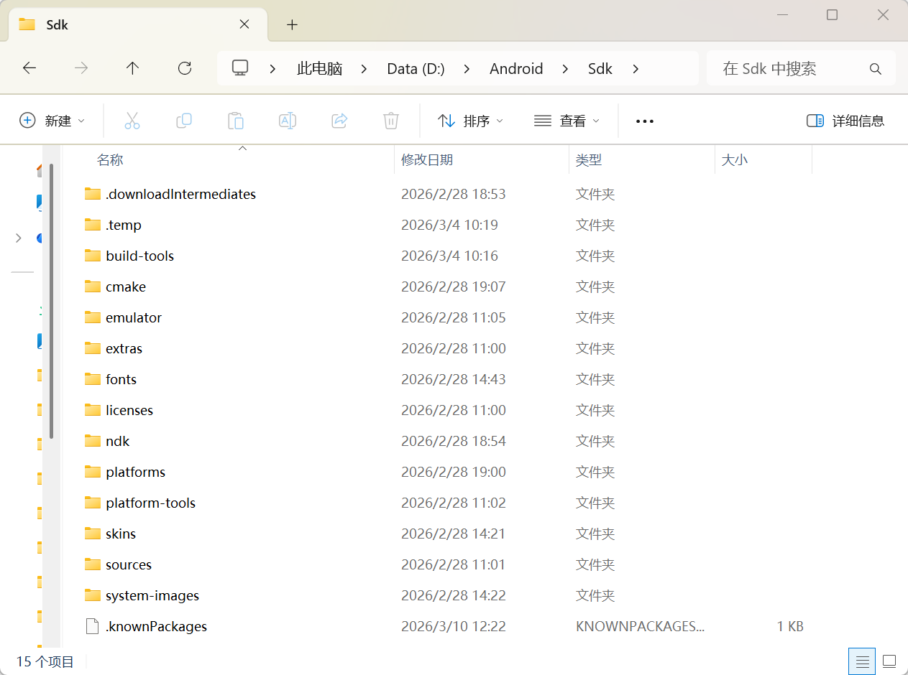

开发环境准备
先说下这里使用的是windowswindowswindows
Java 开发工具包
JDK的安装请移步这里：java - xiaodu114.github.io
记得看下有没有设置JAVA_HOME环境变量。你可以在中检查一下，如下：
$env:JAVA_HOME
如果能看到输出的路径，基本上没有问题。当然你也可以在检查一下javac
javac -version
React Native 需要 Java Development Kit [JDK] 17。因为这个原因，咱这里安装的也是 17 版本。
Android Studio
Android Studio的安装请移步这里：Android Studio - xiaodu114.github.io下面的“安装”章节
环境变量和Path
这里总结一下需要设置哪些环境变量以及需要将那些路径添加到Path
JAVA_HOME
安装完JDK，你可以顺便配置一下这个。具体的请看上文
ANDROID_HOME
无论你是先安装的Android Studio还是先配置该环境变量，请让他们是一个值，具体的截图如下：


ANDROID_AVD_HOME
ANDROID_AVD_HOME他是做什么用的呢？你可能已经猜到了，和模拟器有关。如果没有这个环境变量，Android Studio会把新建的模拟器放到这里C:\Users\用户名\.android\avd。详细的你可以看这里：Android Studio - xiaodu114.github.io下面的“模拟器管理器”章节
Path
%JAVA_HOME%\bin
# 包括 adb.exe, fastboot.exe 等
%ANDROID_HOME%\platform-tools